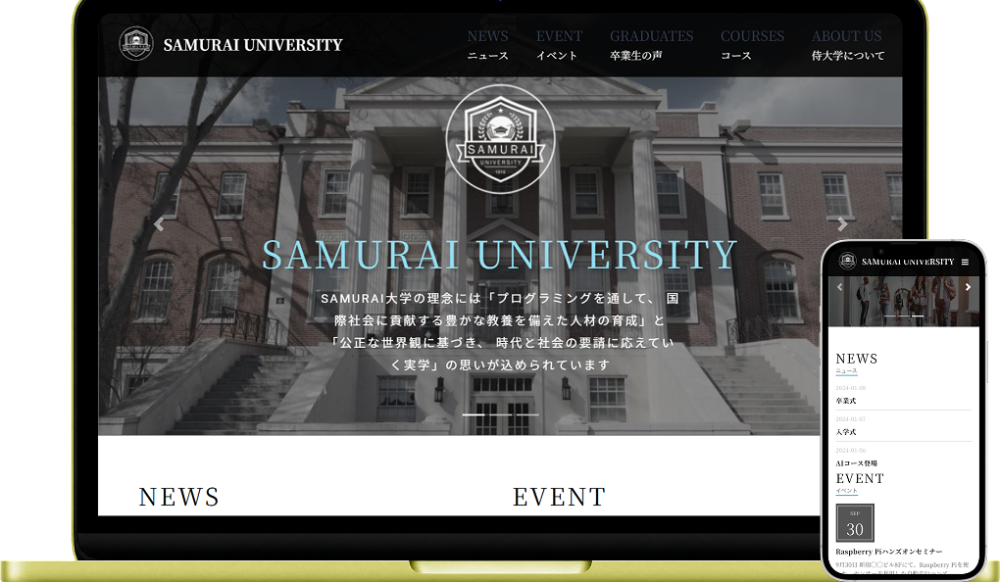
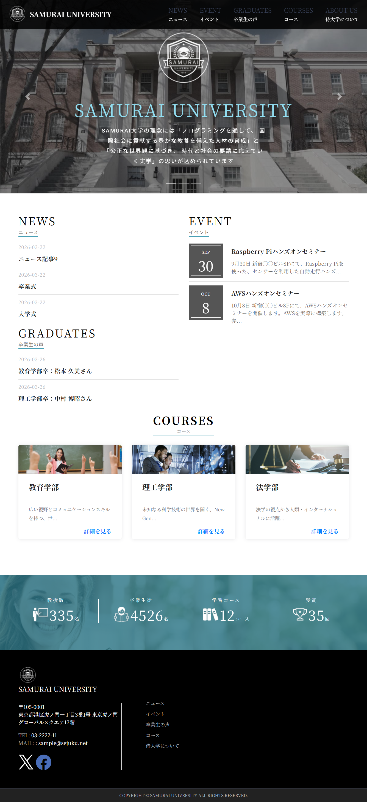
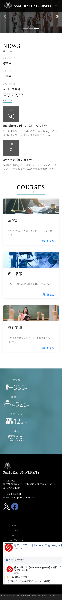

コーディング
練習
大学のサイト

概要
架空の大学「SAMURAI UNIVERSITY」のサイト。 WordPressでオリジナルテーマを使用する練習で作成。
使用ツール
WordPress
Visual Studio Code
制作時期
2026年3月作成
コーディング14日
意識したこと・所感
WordPressのオリジナルテーマ制作に取り組みました。
静的なHTML/CSSの模写にとどまらず、PHPを用いたWordPress化することで、動的なコンテンツ管理システムの構造を深く理解することを目的としました。
特にお知らせ一覧やイベント情報の出力など、実務で多用されるカスタムクエリの実装に注力しています。

